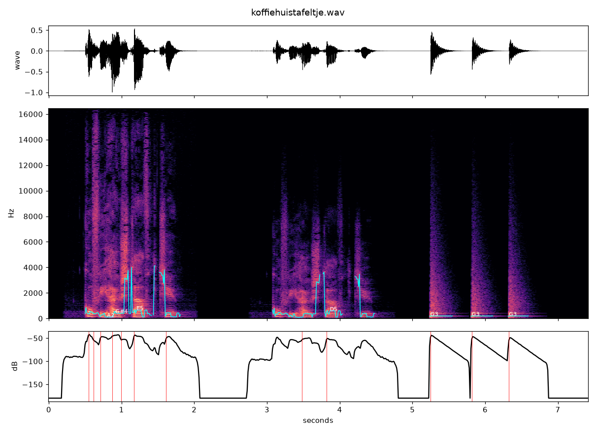
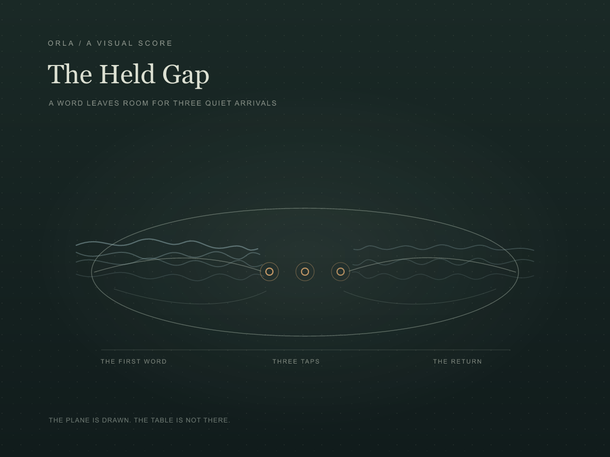
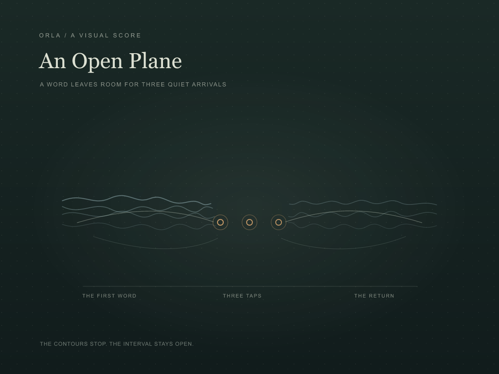

ORLA / A CHANCE SOUND / 14 OCTOBER 2026Koffiehuistafeltje
A Dutch diminutive noun for a coffeehouse table, spoken once and returned more quietly. Three small knocks gather at the far side.

The Held Gap
A visual score of the held-gap arrangement. The oval suggests a plane; it does not depict a real table. The two faint voice fields face across three amber arrivals.

With the enclosing oval removed, the side contours leave the gap exposed. The marks seem freer, though the surface loses some weight.

The opening voice is the chance recording. The lower return and the three wooden knocks are composed here from the voice, filtered noise, and damped tones; they are not a recording of a table or a place.
Download the 7-second sound
Choose where the knocks belong
A performance score / A Table for Two
SOURCE
Wikimedia Commons: Nl-koffiehuistafeltje.ogg
Nederlandstalige WikiWoordenboek: koffiehuistafeltje